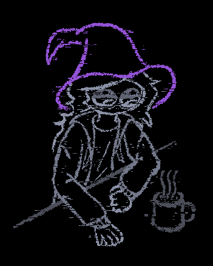

keybizal
21, he/they

about me
Welcome, stranger. I'm somewhat eager that you are visiting my "neocities" website. I'll make this about section of my website as long as I can. These "about mes" are typically difficult for me anyways... well... after making this website... it seems... easier to express myself? But honestly, you'll never get to truly know me this way and maybe that's a good thing idk....
Yes... this is what you're supposed say immediately upon meeting someone...
ok where to start...
...
I am introverted, nonchalant, open minded, and self-aware, 24/7. Most of the time I am quite silly and random. Otherwise, I tend to stay reserved. I have few hobbies but I cherish what I am capable of. After all...
"Jack of all trades, master of none...is better than master of one"
some favorties
- color - purple (...obviously)
- tv shows - smiling friends, gumball, xavier renegade angel, the sopranos, breaking bad, better call saul, regular show, and maybe several others
- movies - everything everywhere all at once, hereditary, into the spider verse, nosferatu (2024), weapons, obsession, backrooms, and maybe more
- memes? - trollface (or any rage comic really), emotiguy, creepy & cursed shit, and ironically like 200+ others
- book - i don't read very often but house of leaves is a book that has ruined all other books for me
-
drink - coffee, coffee, coffee,
root beer is nicesodas are on occasion - misc. - wizards & magic(not harry potter bruh nah get jk rowling outta here), collecting plushies, math sometimes (electrical engineering), i forgot the rest
Below you can continue reading and find my hobbies.
hobbies
drawing
It is stereotypical that most neocities, most strawpages, and other similar website hosting services have one thing in common... they are artists! (well i mean you make the website and therfore you are an artist of some sorts so like this statement sucks)
Although sometimes I don't feel like an artist, I am one and I yearn for art... even if I don't feel it for long periods of time... Naturally, I should have a place to share my art when I feel comfortable and that place should be here somewhere hmmm...
psst... check projects...
gaming
You know, this is such a popular hobby that I would consider not putting it here anyways. Then I realize how diverse video games and gamers are. When I get asked about what games I play, they are usually expecting normal "AAA" answers and not super niche stuff. This has convinced me to provide a list of my favorite games of all time. Additionally, I shall plug my steam page here :)
- The Binding Of Isaac
- Deltarune (and Undertale)
- Team Fortress 2
- Stardew Valley
- Spooky's Jumpscare Mansion
- Risk of Rain 2
- ULTRAKILL
- Noita
- Mewgenics
- The End Is Nigh
- Night in the Woods
- Nuclear Throne
- and a few more maybe... (R.E.P.O, Persona 4 Golden, The Stanley Parable, Runner2, WEBFISHING, Balatro, Baldi's Basics, OneShot, Roblox??? ... well actually roblox sucks... unless...)
music
No, I don't make music. I don't think I can do that. I just listen to music, alot of music. On my previous website, I would have a wide selection of tracks to quickly listen to for a few seconds. Here I cannot do this but I encourage you to check out my playlist that has over 4000+ tracks (quality may vary). Anyways, below are some of my current favorties.
- Daft Punk
- Massive Attack
- Godspeed You! Black Emperor
- Death Grips
- Radiohead
- MGMT
- Aphex Twin
- Stars Of The Lid
- Nine Inch Nails
- Boards Of Canada
- Squarepusher
- The Caretaker
- and loads more... yeah... definitely... anyways... (Interpol, Tyler the Creator, Machine Girl, Oneohtrix Point Never, Geese, Brian Eno, Bjork, Black Midi, Gorillaz, Underscores, maybe just maybe femtanyl, ugh i can't put anymore bruh it's so much like just know i got taste bro)

So that's it... yeah, uh thanks for reading... Go check out everything else there is to offer here.